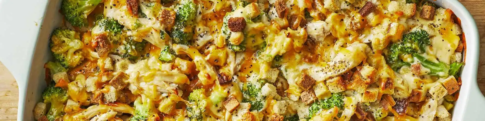

Recipe Void
Home
Recipes
Login
Menu
Home
Recipes
Login
Load Data

These are some quick, healthy & delicious meals that you can prepare, mostly in less than 1 hours!
You can also
import your own recipes
, or make bookmark your
favorite recipes to keep track of the tastiest dishes!
Sort by:
Default
Rating
Overall Time (Prep + Cook)
A-Z
Z-A
Sort